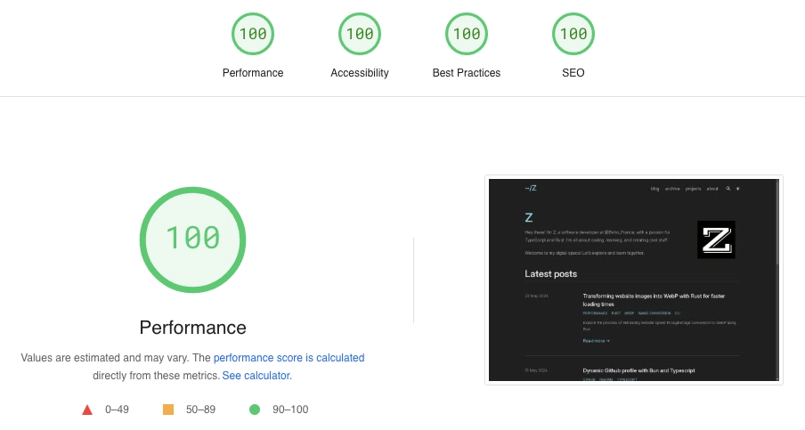
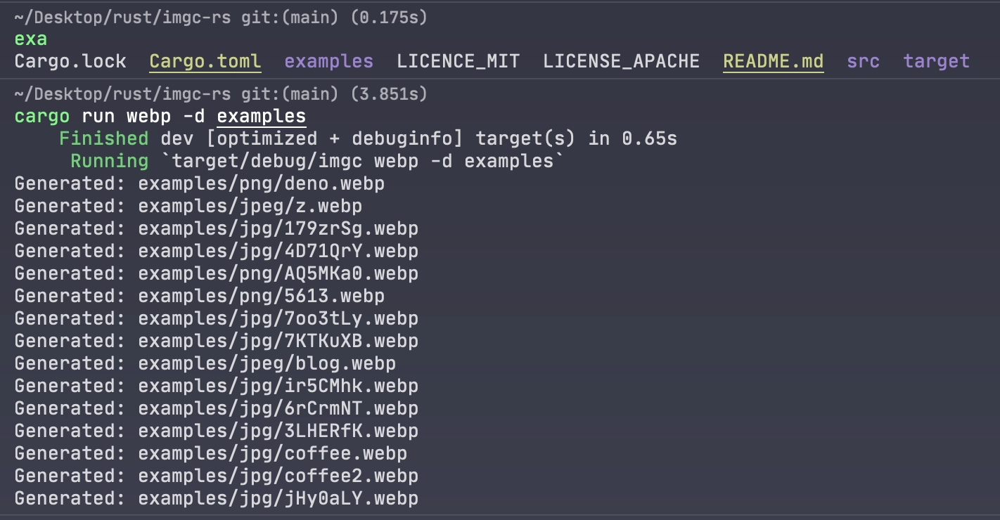

Transforming website images into WebP with Rust for faster loading times
Hi everyone 👋,
Recently, I attended Ekinoday, our company’s annual conference, where my colleagues share knowledge on various topics, from technology to life tips. This event is always very interesting for me.
I had a chance to talk with my colleague Raphaël Tho Vo, who gave a presentation on optimising web performance. Raphaël mentioned that many people don’t realise how much image size and format can effect the web performance. Large image files can slow down a website significantly, affecting user experience.
Raphaël explained that we can improve performance by using better image formats. He mentioned several modern formats like AVIF, WebP, JPEG 2000. Among these, AVIF and WebP are the most supported by web browsers today.
Inspired by Raphaël’s advice, I decided to take a closer look at my website’s performance. I host my site on GitHub, using Zola, a static site engine, along with the Tabi theme. This theme is beautifully designed and well-coded.
I tested my website with PageSpeed Insights and got a perfect score of 100/100 in everything: Performance, Accessibility, Best Practices, and SEO.

However, I noticed that I still use a lot of PNG and JPEG images. Switching to WebP could significantly decrease image sizes and improve more load times.
Converting images to WebP with Rust
How can we accomplish this?
To optimise images, I had to convert them to WebP format. I chose this format because it’s effective and widely supported across different web browsers. But I needed a quick way to convert multiple images to WebP and reuse it multiple times.
There are online tools available to help, but that’s not the solution I’m looking for at the moment. Instead, I’ve chosen to create my own solution using Rust. Rust is great for this because it’s fast and easy to use for simple programs. Making this program will help me learn more about Rust.
The objectif is to convert all kinds of images into WebP with just one command, making it fast and easy.
Now, let’s coding!
For this program, I used the image crate for decoding and encoding images. This crate supports many different image formats:
| Format | Decoding | Encoding |
|---|---|---|
| AVIF | Yes (8-bit only) * | Yes (lossy only) |
| BMP | Yes | Yes |
| Farbfeld | Yes | Yes |
| GIF | Yes | Yes |
| HDR | Yes | Yes |
| ICO | Yes | Yes |
| JPEG | Yes | Yes |
| EXR | Yes | Yes |
| PNG | Yes | Yes |
| PNM | Yes | Yes |
| QOI | Yes | Yes |
| TGA | Yes | Yes |
| TIFF | Yes | Yes |
| WebP | Yes | Yes (lossless only) |
To encode an image to WebP, I created a function encode_webp:
use ;
The DynamicImage type from image crate allows us to handle different image formats. I convert the image to RGBA format and use the WebPEncoder to encode it.
Next, I wrote a function to convert a single image:
use Reader;
use ;
This function first opens and decodes the image, then encodes it to WebP format using the previously defined encode_webp function. Finally, it writes the resulting WebP image to either the specified output directory or the same location as the original image.
To convert all images in a directory, I created a function convert_images:
use ;
use *;
use ;
This function checks if the path is a directory. If it is, it reads all entries and recursively processes each one. If the path is an image, it converts it to WebP. The par_iter() method from the rayon crate enables parallel processing for better performance.
Finally, the main function serves as the entry point of the application:
use Parser;
use ;
use *;
use ;
I use the clap crate to create the CLI. The program accepts a directory containing images to convert and an optional output directory (see more at convert_image function)
Addressing generated image size issues
While working on converting images to WebP format, I encountered a problem: some of the converted images turned out to be larger in size than the originals. This was concerning because my goal was to reduce image size to improve website performance.
I realized that this happened because the image crate in this moment is only supported a new_lossless feature for WebP conversion. This feature maintains the same quality as the original image, sometimes resulting in larger file sizes.
To address this issue, I explored other options and came across the webp crate.
This crate, built on the libwebp-sys and image crate, allows us to better encode images to WebP format with quality control.
I found that by setting the quality parameter to the maximum value of 100, we could consistently generate WebP images with smaller sizes than the originals. In fact, I could reduce the image size by up to 45%.
To apply the webp crate into my code, I only needed to make a slight modification to the encode_webp function. Here’s the updated code snippet:
use DynamicImage;
use ;
Now, with this program, I can quickly convert all images from my website to WebP format.
Here’s an example of a command-line webp in this tool:

You can check out the full code on my GitHub repo: imgc-rs.
I think this project has a lot of potential. We can add a lot more features like batch processing, additional image format conversions, and more. All suggestions and contributions are welcome to make it even better.
Thank you for reading so far! I hope you found this article helpful and gained some new ideas. If you have any questions or suggestions, feel free to reach out.
Enjoyed this article? For more technical content on Typescript or backend development, stay updated by following my blog through RSS feeds
You can also read my other articles on tduyng.medium.com